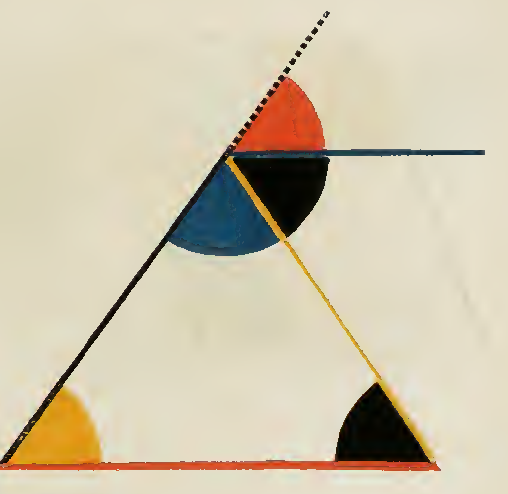

Proposition I.32 — Exterior Angle & Angle Sum of a Triangle¶
Book I, Proposition XXXII. Theorem (Pickering p. 33 · G.125)
If any side () of a triangle be produced, the external angle () is equal to the sum of the two internal and opposite angles ( and ), and the three internal angles of every triangle taken together are equal to two right angles.


Construction. Through the right base vertex draw ∥ ([I.31]).
Demonstration.
Then = (alternate, [I.29]), and = (corresponding, [I.29]),
∴ + = + ([C.N.2]),
and therefore adding the third interior angle :
+ + = ( + + ) = ([I.13]). Q.E.D.
See Commentary on Proposition I.32.